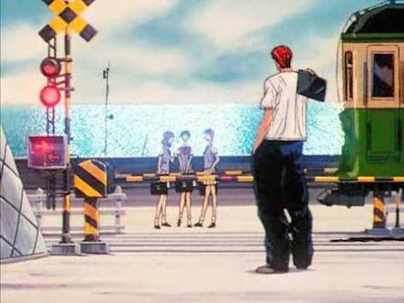
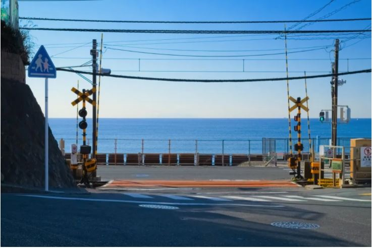

1. 鎌倉高校前駅の踏み切り


スラムダンクの聖地といったら鎌倉高校前駅の踏み切りが、一番有名ではないでしょうか。OPにも登場し、物語の冒頭で桜木花道が、登校中に赤木晴子と出会った場所です。国内のファンはもちろん、海外の方もたくさん訪れる聖地です。
1903年に日坂駅として開業され、1953年に現在の鎌倉高校前駅に改称されました。1997年には、ホームから前面いっぱいに湘南の海が広がっていることから、関東の駅百選に選ばれました。都内から鎌倉高校前駅へ行くには、JR藤沢駅から江ノ島電鉄に乗れば辿り着くことができます。
駐車場がないので、電車で行くのがオススメです。鎌倉高校前駅はスラムダンク以外にも「ハナヤマタ」や「TARI TARI」などいろんなアニメに登場しています。